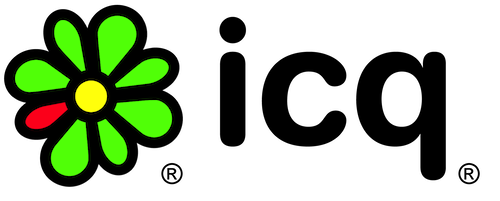

Wamba ( 25.5M monthly visitors, local brand — Mamba) is a largest dating service in Russia.
I've managed development of company's own advertising network (Mamba Play) and grew it to stable product.
After strategic decision of company's management to switch to external advertising sources, I've managed launch of company's own SSP (sell side platform) that allowed Wamba sell pageviews via RTB (real time bidding) technology.

Mail.Ru Group (MAIL:LI, 100M monthly visitors) is a largest internet company in Russia and Eastern Europe.
I've done product and project management, localizations, analytics, mobile and desktop apps.
Worked on largest instant messengers in Russia and CIS: ICQ and Agent@Mail.Ru
I was the first project manager for ICQ in Russia. Managed first releases of mobile ICQ clients for J2ME-phones, Symbian, Symbian Touch, Bada and Windows Phone. Assisted relocation of development of iOS and Android clients from Israel office to Russian office.
My experiment with mobile commerce.
Subscription based daily deal ecommerce service that utilized iPhone app as a delivery channel
I've developed iPhone application and backend.
My experiment with business apps.
The first ever iPhone client for Yandex.Direct (popular PPC ad network in Russia)
Application reached second place in it's category in Russian App Store.
Parta Group is an investment fund based on a model of private business incubator.
Runivermag is ecommerce startup (marketplace) born within Parta Group.
I joined the company as analyst and later was promoted to position of project manager at Runivermag.
At Runivermag, I managed software development project since the company ceased to outsource software development and started in-house development
I was responsible for coordination of activities of Software Engineering department, external (outsourced) designers, Quality Assurance department.
Local bank in Togliatti, Russia.
As methodologist, I implemented corporate knowledge management system, reorganized internal business processes of Department of Banking Methodology and formalized interdepartment processes.
Experimental university near Togliatti, Russia.
During my work at TAoM, I developed multiple business simulators ("Stock Exchange", "Risk management for Entrepreneurs"), training systems, information systems.
Organized educational courses and workshops, among them — "Modelling of Economical Processes", "Systems Analysis and Design"